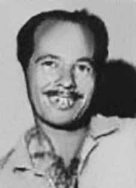

Felix
Escobar
CIRCUNSTÂNCIAS DA MORTE
Apesar de não existirem provas contundentes com relação ao local e à data do sequestro de Félix Escobar Sobrinho, do conjunto probatório se extrai que este ocorreu em setembro ou outubro de 1971.
Como aponta o livro-relatório da CEMDP, uma primeira versão sobre as circunstâncias do desaparecimento de Escobar indica que ele foi sequestrado em outubro, na casa de seu companheiro de militância João Joaquim Santana, em Nova Iguaçu (RJ), enquanto uma segunda versão tem que ele foi detido em Belfort Roxo (RJ), em circunstâncias ainda não esclarecidas.
O então preso político César Queiroz Benjamin afirmou tê-lo visto sob custódia de agentes do DOI-CODI no quartel da Polícia do Exército da Vila Militar, no Rio de Janeiro. Em relatório do Ministério do Exército, apresentado em 1993, consta que Felix Escobar foi preso em razão de “atividades terroristas” e que ele frequentava a pedreira de Xerém, em Duque de Caxias.
Em 28 de janeiro de 1979, em entrevista ao jornalista Antônio Henrique Lago e a Ana Lagoa, da Folha de S. Paulo, um oficial que havia exercido função de comando confirmou a morte de Felix Escobar: “Estes são os nomes das pessoas cujas fichas estavam no ‘necrotério’ de um órgão de segurança em dezembro de 1973 e que são dadas como desaparecidas pelas famílias e pelas organizações de defesa dos direitos humanos, de acordo com as informações colhidas junto a um oficial que atuou em função de comando na época: […] 6 – Félix Escobar – na lista do CBA está como preso em outubro de 1971.” Presume-se que esse oficial seja o coronel Adyr Fiuza de Castro, criador e chefe do CIE, chefe do DOI-CODI I Exército, comandante da PM/RJ e da VI Região Militar.
Although there is no conclusive evidence regarding the place and date of the kidnapping of Félix Escobar Sobrinho, the evidence suggests that it occurred in September or October 1971.
As the CEMDP report book points out, a first version about the circumstances of Escobar's disappearance indicates that he was kidnapped in October, at the home of his fellow activist João Joaquim Santana, in Nova Iguaçu (RJ), while a second version has that he was detained in Belfort Roxo (RJ), in circumstances that have not yet been clarified.
The then political prisoner César Queiroz Benjamin claimed to have seen him in the custody of DOI-CODI agents at the Vila Militar Army Police barracks, in Rio de Janeiro. In a report from the Ministry of the Army, presented in 1993, it is stated that Felix Escobar was arrested due to “terrorist activities” and that he frequented the Xerém quarry, in Duque de Caxias.
On January 28, 1979, in an interview with journalist Antônio Henrique Lago and Ana Lagoa, from Folha de S. Paulo, an officer who had served in command confirmed the death of Felix Escobar: “These are the names of the people whose files were in the 'morgue' of a security agency in December 1973 and who are reported missing by their families and human rights organizations, according to information gathered from an official who served in a command role at the time: […] 6 – Félix Escobar – on the CBA list he was arrested in October 1971.” This officer is presumed to be Colonel Adyr Fiuza de Castro, creator and head of the CIE, head of the DOI-CODI I Army, commander of the PM/RJ and the VI Military Region.
Si bien no existen pruebas concluyentes sobre el lugar y fecha del secuestro de Félix Escobar Sobrinho, las evidencias sugieren que ocurrió en septiembre u octubre de 1971.
Como señala el libro de informes del CEMDP, una primera versión sobre las circunstancias de la desaparición de Escobar indica que fue secuestrado en octubre, en la casa de su compañero activista João Joaquim Santana, en Nova Iguaçu (RJ), mientras que una segunda versión sostiene que fue detenido en Belfort Roxo (RJ), en circunstancias que aún no han sido esclarecidas.
El entonces preso político César Queiroz Benjamín afirmó haberlo visto bajo custodia de agentes del DOI-CODI en el cuartel de la Policía Militar de Vila Militar, en Río de Janeiro. En un informe del Ministerio del Ejército, presentado en 1993, se afirma que Félix Escobar fue detenido por “actividades terroristas” y que frecuentaba la cantera Xerém, en Duque de Caxias.
El 28 de enero de 1979, en una entrevista con los periodistas Antônio Henrique Lago y Ana Lagoa, de Folha de S. Paulo, un oficial que había estado al mando confirmó la muerte de Félix Escobar: “Éstos son los nombres de las personas cuyos expedientes estaban en la 'morgue' de un organismo de seguridad en diciembre de 1973 y que están reportados como desaparecidos por sus familiares y organizaciones de derechos humanos, según información recabada de un funcionario que desempeñaba funciones de mando en ese momento: […] 6 – Félix Escobar – en la lista de la CBA fue detenido en octubre de 1971”. Este oficial se presume es el coronel Adyr Fiuza de Castro, creador y jefe del CIE, jefe del I Ejército DOI-CODI, comandante del PM/RJ y de la VI Región Militar.